MPDV Carnaval 2027, pronto para cotar.
17 peças com o material mais barato que cumpre a função, a quantidade por PDV e o total fechado por regional.
Tudo o que cotar, numa tela.

Faixa de gôndola em L
PS 0,5 mm6 por loja do canal direto + 9 por ponta de gôndola38.391
Gargaleira
Cartão triplex 300 g15 por loja do canal direto28.590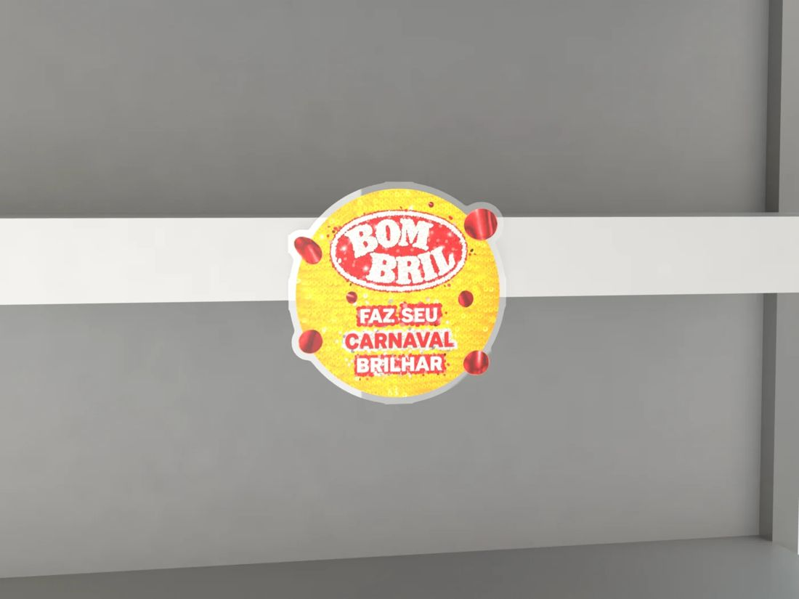
Wobbler
PS 0,5 + PVC cristal2 por loja do canal direto3.812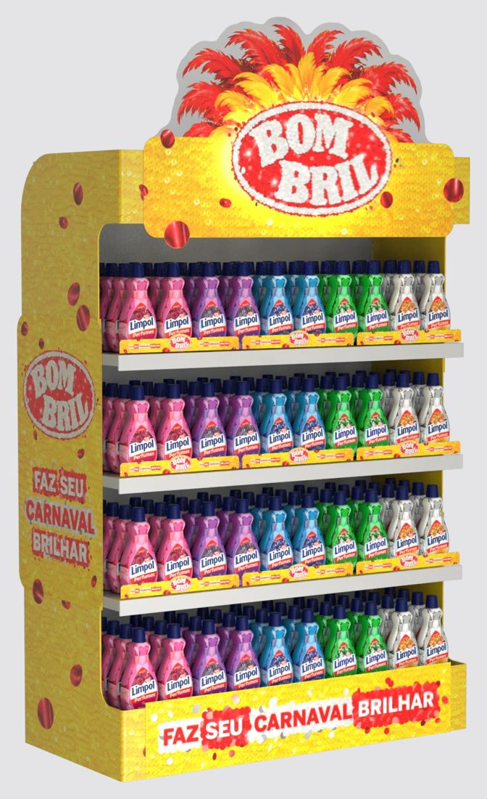
Ponta de gôndola retrátil
Papelão BC + PS, sem LED1 por ponta de gôndola2.995
Forração de ponto extra
Microondulado, 4 painéis1 por ilha (ponto extra)7.536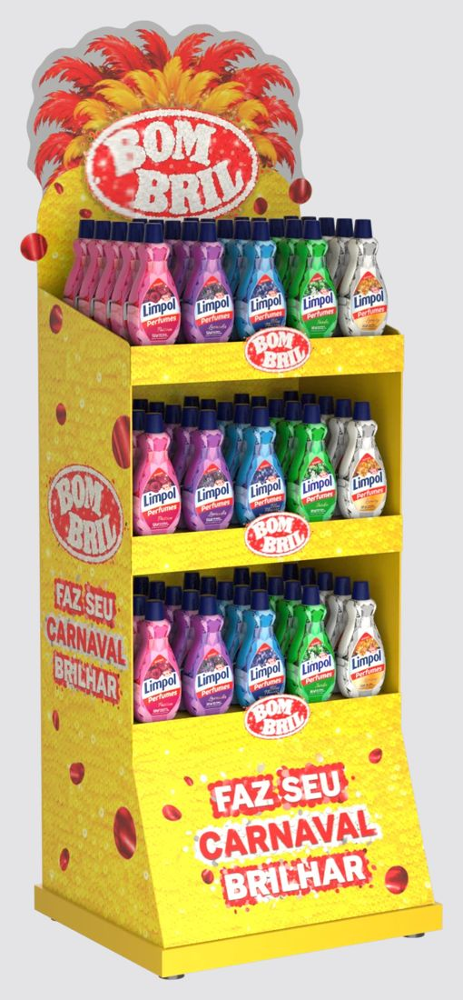
Display de chão
Papelão BC, rodapé polionda1 por loja do canal direto1.906Ilha cenográfica
Papelão, polionda, metalon, LED1 por praça4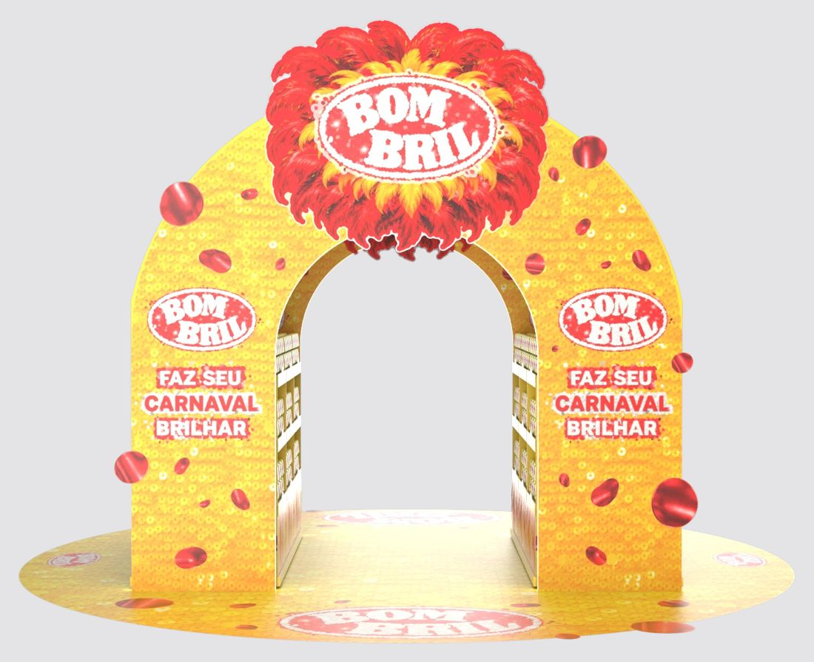
Comunicação regional da ilha
Polionda 4 mm1 por praça4
Abadá
Poliéster sublimado2 por demonstradora16
Camiseta do time
Algodão 30.1, silk 3 coresentrega nacional1.000
Kit motoboy
Colete, plumas, capa e pirulito1 por praça4 kitsPlanilha de cotação
Preencha o preço unitário de cada linhaBaixar .xlsxQuantidade por loja × base de lojas do briefing Bombril (1.906 lojas do canal direto, 2.995 PDVs com ponta, 7.536 PDVs com ilha, 4 praças, 8 demonstradoras). Detalhe de cada peça nas telas seguintes.
O kit de cada PDV, enxuto.
Kit linear
- 6P01Faixa de gôndola em L
- 15P02Gargaleira
- 2P03Wobbler
- 1P06Display de chão
A equipe própria instala, abastece o display e coloca as gargaleiras.
Kit ponta
- 1P04Ponta de gôndola retrátil
- 9P01Faixa de gôndola em L
A ponta já sai com as 9 faixas das 3 prateleiras.
Kit ponto extra
- 1P05Forração de ponto extra
Uma forração no pallet da base, que é o que o shopper vê.
Kit praça
- 1P07Ilha cenográfica
- 1P08 a P11Comunicação regional da ilha
- 1P14 a P17Kit motoboy
Uma ilha cenográfica por praça, já com a comunicação da praça, e um motoboy.
Fonte: briefing Bombril Trade Carnaval 2027 (base de lojas e "1 motoboy por praça"). Regra de quantidade da 75 LAB: 6 faixas = 3 por prateleira na lã de aço e no Limpol; 15 gargaleiras = frente do display (5 frentes × 3 prateleiras); 2 wobblers = 1 por categoria.
O que produzir, peça por peça.
| Cód. | Peça | Quantidade por loja | Lojas / PDVs | Total | Observação |
|---|---|---|---|---|---|
| P01 | Faixa de gôndola em L | 6por loja do canal direto9por ponta de gôndola | × 1.906 + 2.995 | 38.391 | 6 no linear + 9 dentro de cada ponta |
| P02 | Gargaleira | 15por loja do canal direto | × 1.906 | 28.590 | frente do display: 5 frentes × 3 prateleiras |
| P03 | Wobbler | 2por loja do canal direto | × 1.906 | 3.812 | 1 na lã de aço e 1 no Limpol |
| P04 | Ponta de gôndola retrátil | 1por ponta de gôndola | × 2.995 | 2.995 | kit com 11 componentes + 9 faixas P01 (contadas no P01) |
| P05 | Forração de ponto extra | 1por ilha (ponto extra) | × 7.536 | 7.536 | kit de 4 painéis, 1 por ilha |
| P06 | Display de chão | 1por loja do canal direto | × 1.906 | 1.906 | abastece 75 Limpol 500 ml |
| P07 | Ilha cenográfica (estrutura) | 1por praça | × 4 | 4 | 12 displays, 4 testeiras, 2 portais, adesivo de chão |
| P08 a P11 | Comunicação regional da ilha | 1por praça | × 4 | 4 | 1 por praça: Salvador, São Paulo/Vai-Vai, Rio, Olinda |
| P12 | Abadá das demonstradoras | 2por demonstradora | × 8 | 16 | 2 por demonstradora (troca para lavar) |
| P13 | Camiseta do time Bombril | ·entrega nacional | × 1 entrega | 1.000 | nacional, 1 entrega; informar também o preço para 800 |
| P14 | Colete do motoboy com fitilhos | 1por praça | × 4 | 4 | 1 motoboy por praça |
| P15 | Aplique de plumas para capacete | 1por praça | × 4 | 4 | sem furar nem colar no casco |
| P16 | Capa de bag com fitilhos | 1por praça | × 4 | 4 | sobre a bag do motoboy |
| P17 | Pirulito da bag | 1por praça | × 4 | 4 | estandarte com haste, preso na bag |
| Cód. | Peça | SPC | SPI | RJ | MG/CO | NO | NE | SUL | Total |
|---|---|---|---|---|---|---|---|---|---|
| P01 | Faixa de gôndola em L | 7.794 | 4.068 | 5.790 | 6.867 | 3.450 | 1.893 | 8.529 | 38.391 |
| P02 | Gargaleira | 5.130 | 3.465 | 2.370 | 5.355 | 3.225 | 2.190 | 6.855 | 28.590 |
| P03 | Wobbler | 684 | 462 | 316 | 714 | 430 | 292 | 914 | 3.812 |
| P04 | Ponta de gôndola retrátil | 638 | 298 | 538 | 525 | 240 | 113 | 643 | 2.995 |
| P05 | Forração de ponto extra | 1.913 | 730 | 521 | 1.313 | 571 | 1.195 | 1.293 | 7.536 |
| P06 | Display de chão | 342 | 231 | 158 | 357 | 215 | 146 | 457 | 1.906 |
| P07 | Ilha cenográfica (estrutura) | 1 | · | 1 | · | · | 2 | · | 4 |
| P08 a P11 | Comunicação regional da ilha | 1 | · | 1 | · | · | 2 | · | 4 |
| P12 | Abadá das demonstradoras | 2 | 2 | 2 | 4 | 2 | 2 | 2 | 16 |
| P13 | Camiseta do time Bombril | entrega nacional única | 1.000 | ||||||
| P14 | Colete do motoboy com fitilhos | 1 | · | 1 | · | · | 2 | · | 4 |
| P15 | Aplique de plumas para capacete | 1 | · | 1 | · | · | 2 | · | 4 |
| P16 | Capa de bag com fitilhos | 1 | · | 1 | · | · | 2 | · | 4 |
| P17 | Pirulito da bag | 1 | · | 1 | · | · | 2 | · | 4 |
Quantidades calculadas de fonte/dados.py com a base de lojas do briefing Bombril. As 9 faixas de cada ponta estão somadas no P01. Camisetas: 1.000 pelo briefing (cotar também 800).
Faixa de gôndola em L
Em pé sobre a prateleira, sem cola. Um tamanho só para linear e ponta.
Na gôndola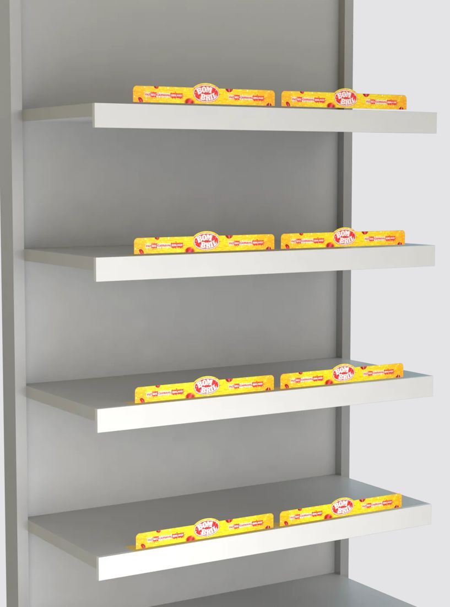
No módulo| # | Peça | Qtd. | Medida (cm) | Material e acabamento |
|---|---|---|---|---|
| 01 | Faixa de gôndola em L | 1 | frente 32,0 × 4,9 + aba 5 (planificado 32,0 × 9,9) | PS 0,5 mm branco, impressão digital UV 4×0, vinco na dobra, corte reto |
Medidas do modelo 3D em escala real (caderno BOM003). Ajuste 75 LAB: 32,0 de largura para caber 3 por prateleira na ponta mais estreita (104) e num módulo de 100.
PerspectivaGargaleira
Entra no gargalo do Limpol 500 ml pelo furo.
| # | Peça | Qtd. | Medida (cm) | Material e acabamento |
|---|---|---|---|---|
| 01 | Gargaleira | 1 | 5,6 × 15,6, furo Ø 4,4, vinco abaixo do furo | Cartão triplex 300 g, offset 4×0, verniz de máquina, faca especial |
Medidas do caderno BOM003. Ajuste 75 LAB: uma especificação só (cartão triplex 300 g) no lugar de "cartão ou PS", para os preços ficarem comparáveis.
Wobbler
Pende rente à borda da prateleira e balança na haste.
| # | Peça | Qtd. | Medida (cm) | Material e acabamento |
|---|---|---|---|---|
| 01 | Disco | 1 | 14,2 × 14,1 | PS 0,5 mm branco, digital UV 4×0, faca no contorno da arte |
| 02 | Haste com aba | 1 | 2,5 × 13 + aba 2,5 × 3 | PVC cristal 0,3 mm, dupla-face na aba |
Medidas do caderno BOM003. Ajustes 75 LAB: disco de PS 1 mm para 0,5 mm; haste de PETG cristal para PVC cristal 0,3 mm, padrão de mercado para wobbler.
Ponta de gôndola retrátil
Veste gôndolas de 104 a 134 de largura e 148 a 190 de altura.
| # | Peça | Qtd. | Medida (cm) | Material e acabamento |
|---|---|---|---|---|
| 01 | Canto em L superior (esq. e dir.) | 2 | lateral 55,9 × 64,2 + frente 55,9 × 19,6; raio 1,2 | Papelão ondulado BC, couché 4×0 laminado, vinco múltiplo na dobra curva |
| 02 | Canto em L inferior (esq. e dir.) | 2 | lateral 55,9 × 64,2 + frente 55,9 × 19,6; raio 1,2 | Papelão ondulado BC, couché 4×0 laminado, vinco múltiplo na dobra curva |
| 03 | Régua de coluna (esq. e dir.) | 2 | 45 × 80 | Papelão ondulado BC kraft, sem impressão (fica por dentro) |
| 04 | Aplique lateral direito (campanha) | 1 | 50 × 86,9 (faca) | PS 0,5 mm, digital UV 4×0, dupla-face |
| 05 | Aplique lateral esquerdo (compre e ganhe) | 1 | 50 × 86,9 (faca) | PS 0,5 mm, digital UV 4×0, dupla-face |
| 06 | Testeira com plumas | 1 | 110,8 × 61,7 | Papelão ondulado BC, couché 4×0 laminado, faca no contorno das plumas |
| 07 | Logo em relevo | 1 | 59,5 × 33,6, afastado 1 da testeira | PS 1 mm, digital UV 4×0, espaçador de papelão |
| 08 | Aplique da base inferior | 1 | 105,6 × 21,1 | PS 0,5 mm, digital UV 4×0 |
| 09 | Faixa de gôndola em L (P01) | 9 | 3 por prateleira | Ver P01 (quantidade somada no P01) |
- Largura: abre 30. As frentes dos cantos se sobrepõem até 10,2 em 104; em 134 sobra um vão de 19,8, coberto pela testeira e pelo aplique da base.
- Altura: abre 42. A régua de coluna de 80 corre por dentro dos cantos e cobre o vão lateral, de 19,6 a 61,6.
- Logo em relevo, sem LED. A ponta não tem tomada: o brilho vem da impressão e do relevo de 1 cm.
- Montagem sem ferramenta. Encaixes e fixações são proposta do fornecedor; o promotor monta sozinho, sem escada.
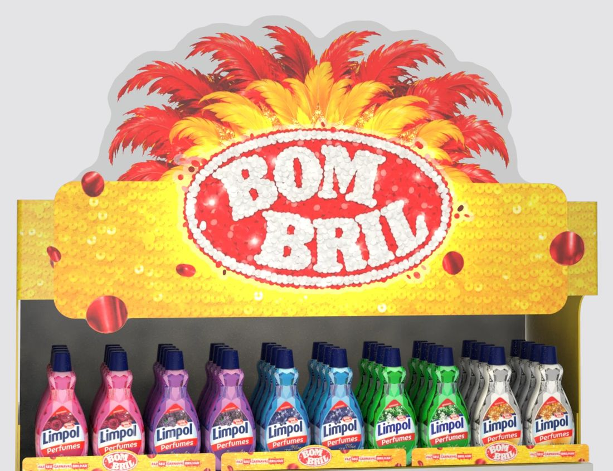
Testeira com plumas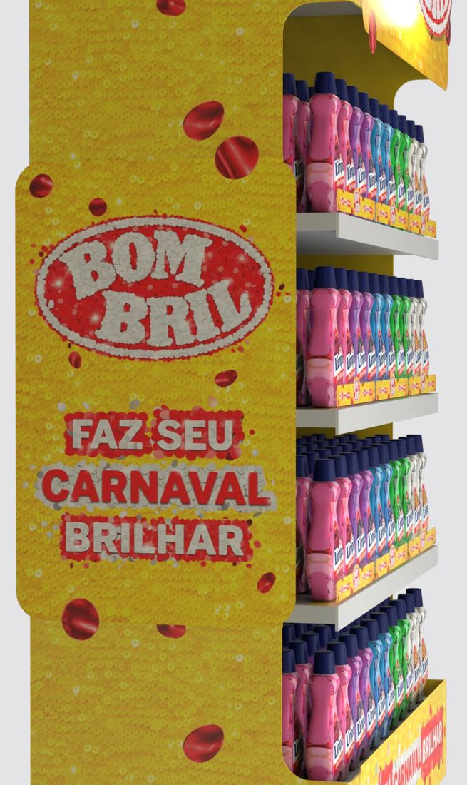
LateralMedidas do caderno BOM003, estado de referência 120 × 170,9 (altura total 206,3). Ajustes 75 LAB: sem LED; papelão ondulado no lugar de polionda; PS no lugar de PETG; 2 apliques laterais em vez de 3.
Forração de ponto extra
Faixa em volta do pallet PBR 120 × 100, com arte contínua.
No pallet| # | Peça | Qtd. | Medida (cm) | Material e acabamento |
|---|---|---|---|---|
| 01 | Painel frente e fundo | 2 | 125 × 50 (face de 120 + aba de emenda de 5) | Microondulado onda E, couché 4×0 laminado, BOPP brilho, vinco na aba |
| 02 | Painel lateral | 2 | 105 × 50 (face de 100 + aba de emenda de 5) | Microondulado onda E, couché 4×0 laminado, BOPP brilho, vinco na aba |
| 03 | Fita dupla-face | 4 | tiras de 50 | Fecho das 4 quinas, vai no kit |
Pallet PBR 120 × 100 (padrão brasileiro). Ajuste 75 LAB: 4 painéis com aba de emenda no lugar da faixa contínua de 432 × 50, que não fechava a volta e não cabia na folha de impressão.
Display de chão
63,6 × 55,8 × 185,4, com 3 prateleiras para 75 Limpol 500 ml.
| # | Peça | Qtd. | Medida (cm) | Material e acabamento |
|---|---|---|---|---|
| 01 | Lateral | 2 | perfil 53 × 126, topo inclinado, canto arredondado | Papelão ondulado BC, couché 4×0 laminado por fora, capa branca por dentro |
| 02 | Costas | 1 | 63,6 × 140 | Papelão ondulado BC, couché 4×0 laminado |
| 03 | Cabeçote com plumas | 1 | 70,3 × 45,6, sobrepõe 7 nas costas | Papelão ondulado BC, couché 4×0 laminado, faca nas plumas |
| 04 | Aplique do logo | 1 | 45,6 × 25,8, afastado 1 do cabeçote | PS 1 mm, digital UV 4×0 |
| 05 | Prateleira em bandeja | 3 | piso 62,8 × 40, abas de 4 em U na frente e no fundo | Papelão ondulado BC capa branca, carga de 15 kg sem flecha visível |
| 06 | Faixa frontal da prateleira | 3 | 63,6 × 10,5, logo recortado acima da borda | Microondulado onda E, couché 4×0 laminado |
| 07 | Frente inclinada da base | 1 | 63,6 × 36,8 | Papelão ondulado BC, couché 4×0 laminado |
| 08 | Rodapé | 1 | 66 × 55,8 × 5,3 | Polionda 4 mm amarela em massa (resiste ao pano de chão) |
| 09 | Pé redondo | 4 | Ø 5,2 × 1,5 | Plástico preto |
- 37,2vão entre pisos: frasco de 24,5 + 12,7 de folga para a mão
- 15 kgcarga por prateleira (25 frascos dão 13,5 kg)
- 6,8do chão: rodapé de polionda e 4 pés pretos contra o pano de chão
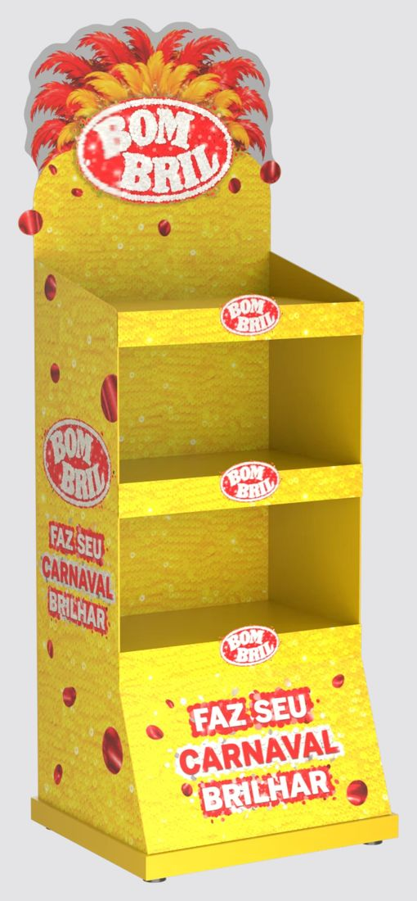
Vazio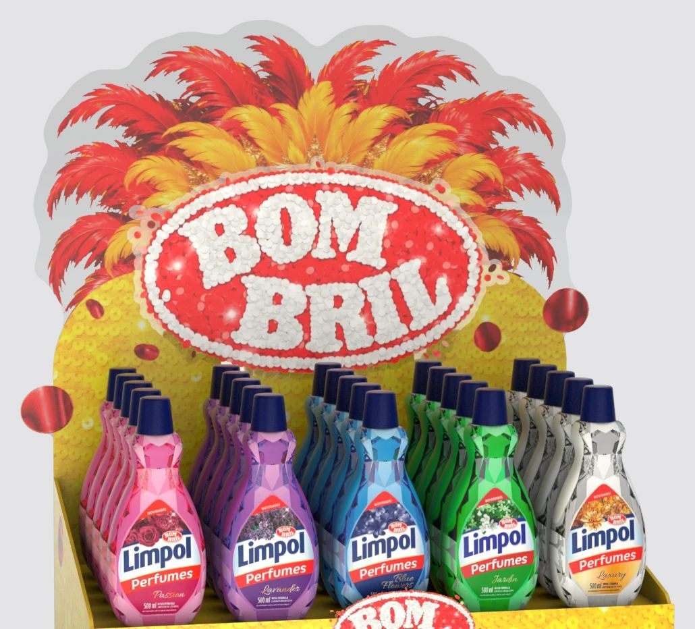
CabeçoteFrasco Limpol 500 ml: 10,5 × 24,5 × 6 (caderno BOM003); peso estimado de 0,54 kg por frasco cheio. Ajustes 75 LAB: papelão no lugar de polionda, cabeçote separado das costas, logo em PS, interior branco.
Ilha cenográfica
Uma por praça: 12 displays, 2 portais e adesivo de chão. Só testeiras e plumas trocam.
| # | Peça | Qtd. | Medida (cm) | Material e acabamento |
|---|---|---|---|---|
| 01 | Display de base reta | 12 | 63,6 × 41,4 × 157,5 | Papelão ondulado BC, impressão digital UV direta |
| 02 | Fitilhos da base | 12 conj. | 63,6 de largura, caindo sobre a base | Fitilho metalizado amarelo e vermelho |
| 03 | Portal | 2 | 312,6 × 291,3 × 6; colunas de 81,6; passagem 149,4 × 208,9 | Metalon 20 × 20 pintado + polionda 4 mm impressa UV nos 2 lados; sapata sem furar o piso |
| 04 | Logo iluminado da testeira | 4 | 107 × 60,5 | PS 2 mm, digital UV, fita LED 12 V atrás (luz rebatida) |
| 05 | Logo iluminado do portal | 4 | 109 × 61,7 (frente e verso) | PS 2 mm, digital UV, fita LED 12 V atrás (luz rebatida) |
| 06 | Fita de LED do portal | 2 conj. | 12,7 m por portal (contorno externo e interno) | Fita LED 12 V em perfil com difusor, fonte bivolt e cabo até a tomada |
| 07 | Adesivo de chão | 1 | Ø 480, em gomos de até 130 de largura | Vinil impresso + laminação antiderrapante |
Luzo LED fica só na ilha, que é montada com ponto de energia da loja: fonte bivolt e cabo até a tomada no preço.
| # | Peça | Qtd. | Medida (cm) | Material e acabamento |
|---|---|---|---|---|
| 01 | Testeira de grupo com plumas | 4 | 199,5 × 111, topo a 244,9 do chão | Polionda 4 mm, digital UV, recorte das plumas |
| 02 | Aplique de plumas do portal | 4 | 161,9 × 132,4 (frente e verso), topo a 324,9 | Polionda 4 mm, digital UV, recorte |
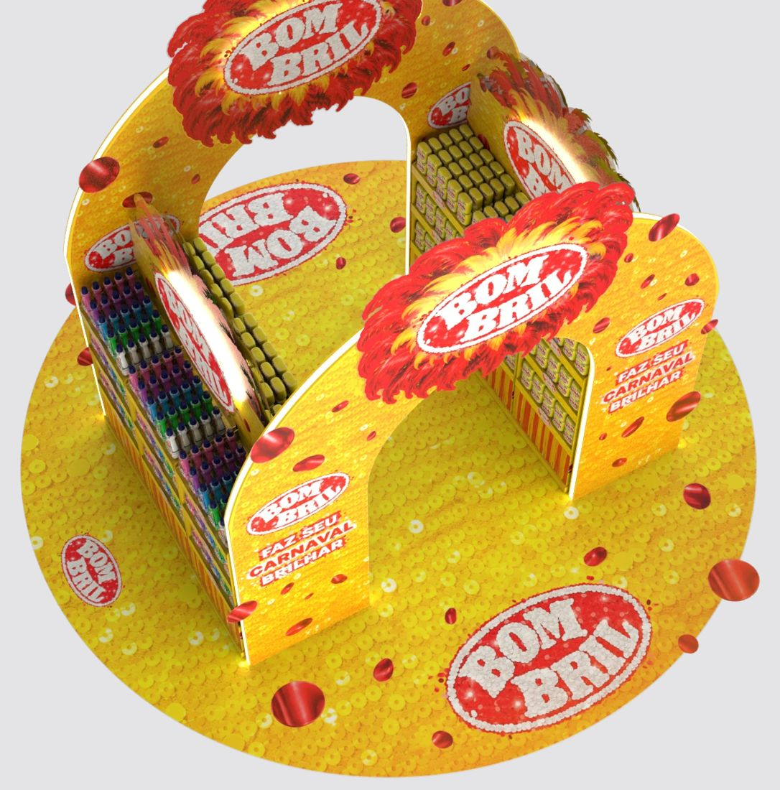
De cimaMedidas do caderno BOM003: área Ø 480; displays 317 × 198; portal 312,6 × 291,3 (324,9 com plumas); passagem 149,4 × 208,9. Fileiras externas: Limpol e Mon Bijou; internas: Bombril.
Uniformes e motoboy.
P12 · AbadáP13 · Camiseta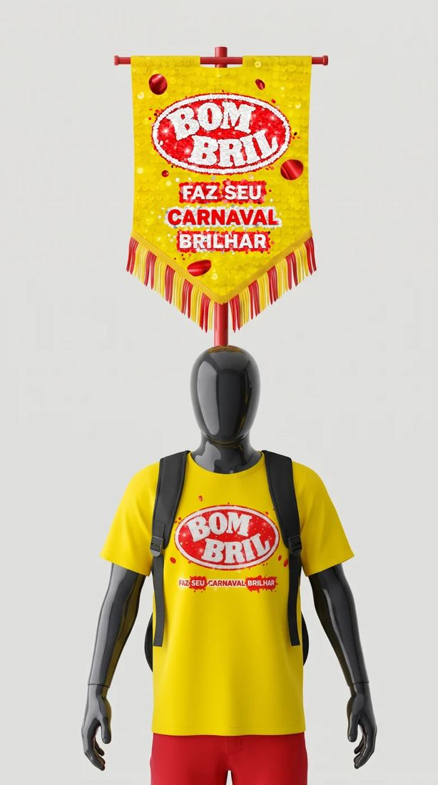
P14 · P17 · Colete e pirulitoP15 · Capacete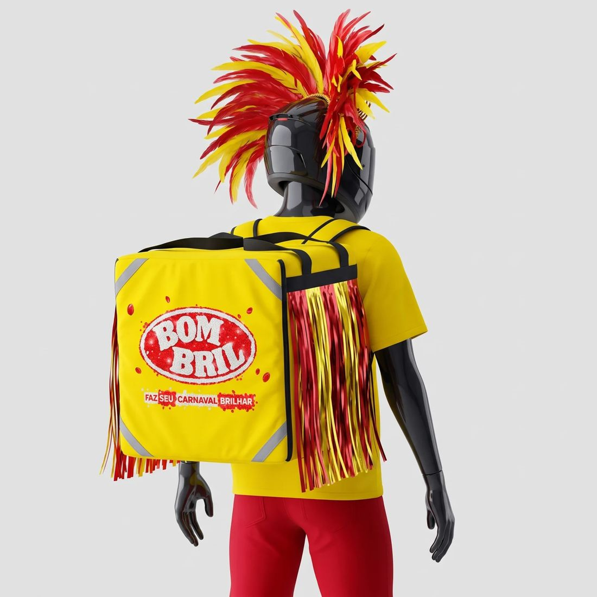
P16 · Bag| Cód. | Peça | Total | Regra | Medida | Material e acabamento |
|---|---|---|---|---|---|
| P12 | Abadá das demonstradoras | 16 | 2 por demonstradora (troca para lavar) | grade P a GG | Malha 100% poliéster (dry), sublimação total, 4 artes regionais |
| P13 | Camiseta do time Bombril | 1.000 | nacional, 1 entrega; informar também o preço para 800 | grade P a GG | Malha 100% algodão fio 30.1 cardado amarela, silk 3 cores só na frente |
| P14 | Colete com fitilhos | 4 | 1 motoboy por praça | tamanho único ajustável | Oxford sublimado com fitilhos metalizados costurados na barra |
| P15 | Aplique de plumas | 4 | sem furar nem colar no casco | sobre capacete padrão | Plumas sintéticas em base de EVA com elástico; sem furar nem colar no casco |
| P16 | Capa de bag com fitilhos | 4 | sobre a bag do motoboy | pela bag do motoboy | Oxford sublimado com elástico + fitilhos metalizados |
| P17 | Pirulito da bag | 4 | estandarte com haste, preso na bag | estandarte com franja | Tecido sublimado + haste de PVC presa na bag |
Atençãoo aplique de plumas é para ativação com a moto parada; em trânsito o capacete fica como saiu de fábrica.
Fonte: briefing Bombril (8 demonstradoras, uma por regional; motoboy com mochila pirulito, 1 por praça; camisetas 1.000). Grade P a GG: preço único, grade final no pedido.
Responda na planilha, peça por peça.
- 1Baixe a planilha.Ela já traz cada peça, a especificação e a quantidade total.
- 2Preencha o preço unitário.Com impostos destacados, prazo de produção em dias úteis e o preço do lote extra de 5%.
- 3Opcional: frete por regional.Na aba de entrega, com as quantidades de cada regional.
- 4Envie para quem mandou este link.Com CNPJ, validade da proposta e condição de pagamento.
75 LAB · caderno de cotação BOM003 · Bombril Carnaval 2027. Medidas em cm, tolerância ± 0,5, confirmar em prova física. Encaixes e fixações: proposta do fornecedor, sem ferramenta na loja.
- Resumo
- Quantidades
- Peças
- Resposta